forward rendering: rendering primitives are transformed from model to device (hardware and OpenGL)
backward rendering: start with a point in image and work out what model primitives project to it (raytracing)
the graphics pipeline for forward projection:
rendering is the conversion of a (3D) scene into a (2D) image
scenes consist of models in 3D space
models consist of primitives supported by rendering system
the scene -> image conversion is broken into steps called graphics pipeline
modelling viewing
transformations transformation
+------+ +---+ +----------+ +----------+ +----------+
|model +----->+M1 | | | | | | |
+------+ +---+ | 3D | +---+ | 3D | +-----------------------------+ | 2D/3D | +---------+ +-------+
+------>+ world +---->+ V +-->+ view +------>+ (P -> clip -> normalize) +----->+ device +---->+ raster- +----->+ 2D |
+------+ +---+ | scene | +---+ | scene | | projection | | scene | | ization | | image |
|model +----->+M2 | | | | | +-----------------------------+ | | +---------+ +-------+
+------+ +---+ +----------+ +----------+ +----------+ DCS/SCS
MCS WCS VCS NDCS device/screen
modelling world viewer normalized coord.
coordinate coord. coord. device system
system system system coord.
system
primitives:
typical primitives directly supported by hardware: points (pixels), line segments, polygons (convex polygons or triangles)
others: spline curves, spline surfaces, implicit surfaces, etc.
algorithms:
transformation: convert representations of models/primitives from one coordinate system
to another
clipping/hidden surface removal: remove primitives and parts of primitives that are
not visible on the display
rasterization: convert a projected screen-space primitive to a set of pixels
picking: select a 3D object by clicking an input device over a pixel location
shading and illumination: simulate the interaction of light with a scene
animation: simulate movement by rendering a sequence of frames
available apis:
xlib, GDI: 2d rasterization
PostScript, PDF, SVG: 2D transformations and 2d rasterization
OpenGL, D3D: 3d pipeline
APIs provide access to rendering hardware via conceptual model
APIs hide which graphics algorithms are or are not implemented in hardware by simulating missing pieces in software
devices
calligraphic display devices: draw polygon and line segments directly
eg plotters, laser light projection systems, direct beam control CRTs
raster display devices: draw pixels
requires rasterization algorithms to quickly determine sampled representations of geometric primitives
raster cathode ray tube (CRT):
benefits:
capable of high resolution
good color fidelity
high contrast (100/1)
high update rate
electron beam scanned in regular pattern of horizontal scanlines
raster images stored in frame buffer
RGB values stored in color buffers read by raster
intensity of electron beam modified by the pixel value
color CRTs have 3 different colors of phosphor and 3 independent electron guns
shadow masks allow each gun to irradiate only one color of phosphor
liquid crystal display (LCD):
traits:
flat panels
flicker free
decreased viewing angle
random access to cells like memory
cells contain liquid crystal molecules that align when charged
unaligned molecules twist light
polarizing filters allow only light through unaligned molecules
subpixel color filter masks used for RGB
maths
points and vectors are different objects:
points represent a position specified with coordinate values in the same reference frame so that the distance from origin depends on choice of reference frame
vector is difference of two points
have different operations
behave differently under transformation
defn. a vector spaceV is a set of vectors that
has addition: u,v∈V⟹u+v∈V
has scalar multiplication: u∈V⟹αu∈V where α is member of some field
axioms of vector spaces:
addition commutes: u+v=v+u
addition assoccates: (u+v)+w=u+(v+w)
scalar multiplication distributes: α(u+v)=αu+αv
unique zero element: 0+u=u
field unit element: 1u=u
defn. set B={v1,...,vn}spansV iff any v∈V can be written as a linear combinationv=∑i∈[n]αivi.
defn. a basis is any minimal spanning set. all bases are the same size.
defn.dimension is the number of vector in basis (we work in 2d and 3d spaces).
defn. an affine space is a set of vectors V and a set of points P where
vectors V form a vector space
points can be combined with vectors to make new points, ie P+v⇒Q∀P,Q∈P,v∈V
remark. affine spaces do not have origin or angles
defn. a frameF=(v1,...,vn,O) is a vector basis plus an origin point O.
the dimension of an affine space is same as that of V.
defn. an inner product space for vector space V is a binary operator V2→R with
u⋅v=v⋅u
(u+v)⋅w=u⋅w+v⋅w
u⋅u≥0
(αu)⋅v=α(u⋅v)
defn. a metric space is any space with a distance metricd(P,Q) defined on its elements.
axioms of metricd(P,Q)
d(P,Q)≥0
d(P,Q)=0⟺P=Q
d(P,Q)=d(Q,P)
d(P,Q)≤d(P,R)+d(R,Q)
distance is intrinsic to space, not a property of the frame
defn. an euclidean space is where distance metric is based on a dot product:
u⋅v=uxvx+uyvy+uzvz=∣∣u∣∣∣v∣∣cos(∠uv)
defn. the norm of vector is ∣u∣=u⋅u.
defn. the scalar projection of vector u on v is u→v=∣∣u∣∣cos(∠uv)=∣∣v∣∣u⋅v.
a class of rigid body transformations (preserves shape and size)
matrix form is more expensive, but preferred because it treats points and vectors uniformly, consistent with other transformations, and easier for composing
2d scale about origin:
⎣⎡sx000sy0001⎦⎤S(sx,sy)⎣⎡xy0 or 1⎦⎤=⎣⎡sxxsyy0 or 1⎦⎤
specified by factors sx,sy∈R
a point [x,y,1]⊺ maps to [sxx,syy,1]⊺
a vector [x,y,0]⊺ maps to [sxx,syy,0]⊺
is linear
2d rotation: counterclockwise about origin by angle θ
⎣⎡cosθsinθ0−sinθcosθ0001⎦⎤R(θ)⎣⎡xy0 or 1⎦⎤=⎣⎡x′y′0 or 1⎦⎤
applies to points or vectors
is linear
2d shear: intermixes coordinates according to α,β∈R
⎣⎡1α0β10001⎦⎤Sh(α,β)⎣⎡xy0 or 1⎦⎤=⎣⎡x+βyαx+y0 or 1⎦⎤
applies to points or vectors
is linear
eg. horizontal (x-axis) shear (45 degrees)
x-axis: α=0,β=1
y-axis: α=1,β=0
reflection: through a line
applies to points or vectors
is linear
eg. reflect through x-axis:
⎣⎡1000−10001⎦⎤⎣⎡xy0 or 1⎦⎤=⎣⎡x−y0 or 1⎦⎤
reflect through y-axis:
⎣⎡−100010001⎦⎤⎣⎡xy0 or 1⎦⎤=⎣⎡−xy0 or 1⎦⎤
remark. an arbitrary sequence of rotation, translation, scale and transformations results in an affine transformation which preserves the parallelism of lines, but not lengths and angles.
eg. how to rotate around an arbitrary point P=[x0,y0,1]⊺?
translate P to origin: T(−x0,−y0)
rotate around origin: R(θ)
translate origin back to P: T(x0,y0)
the desired transformation is T(x0,y0)∘R(θ)∘T(−x0,−y0) = matrix multiplication
otherwise, we need to compute, the top-left portion M1:2,1:2=[[w1]F2,[w2]F2] ie solve F1=F2M1:2,1:2, so that Mp is the coordinates desired. (does not work for non-ortho?)
the last column is used for offset!
note:
frame elements are usually specified in standard frame for space
eg. a plane is defined by normal times difference of two points: n⊺(p−p0)=0. points p on the plane are transformed using M, find the new normal n′.
suppose that matrix is Q, then we have
(Qn)⊺M(p−p0)n⊺Q⊺M(p−p0)=0=0
to make this hold, we must have Q⊺M= a multiple of identity matrix. hence we get Q=(M−1)⊺, and n′=(M−1)⊺n.
windows and viewports
we start with 3D scene, but eventually project to 2D scene (which is infinite). we map a finite rectangular region of 2D device scene to device.
window: rectangular region of interest in scene
viewport: rectangular region on device
usually both are aligned with coordinate axes
given a window point (xw,yw), we want to map to viewport point (xv,yv), given Lw,Hw are length & height of window, and Lv,Hv are length & height of viewport. use:
xv=LwLv(xw−xwl)+xvl
similarly for yv, where xwl,xvl are window & viewport corners.
if LwHw=LvHv, the image is distorted. the quantities are called aspect ratios of the window and viewport.
(usually these coords are in [−1,1]2 NDC)
normalized device coordinates
where to specify viewport? could specify it in device coordinates...
if we map directly from WCS to a DCS, then changing our device requires writing the mapping. instead, we use normalized device coordinates (NDC) as intermediate system that gets mapped to device layer.
windows in WCS is mapped to viewports specified within a unit square in NDC space
then map viewports from NDC to screen
clipping
we want to remove points outside a region of interest (discard parts of primitives outside window).
point clipping: remove points outside window
a point is either entirely in region or not
line clipping: remove portion of line segment outside window
line segments can straddle the region boundary
Liang-Barsky algorithm efficiently clips line segments to a halfspace
halfspaces can be combined to bound a convex region
can use some of its ideas to clip points
parametric representation of line: L(t)=(1−t)A+tB=A+t(B−A)
A and B are distinct points
for t∈R, it defines an infinite line
for t∈[0,1], it defines a line segment from A to B
good for generating points on a line
not so good for testing if given point is on the line
implicit representation of line: ℓ(Q)=(Q−P)⋅n
P is a point on the line
n is vector perpendicular to line
ℓ(Q) gives signed distance from any point Q to line
sign tells if Q is on left or right relative to direction of n
ℓ(Q)=0 if Q is on the line
use same form for implicit representation of a halfspace
clipping point to halfspace:
represent window edge as implicit line/halfspace
use implicit form of edge to classify a point Q
convention for the normal: points to the inside
check sign of ℓ(Q):
ℓ(Q)>0: inside
otherwise clip Q
it is on edge or outside (may want to keep things on the boundary)
clipping line segment to halfspace:
if line segment is entirely inside, keep it
if line segment is entirely outside, discard it
otherwise generate new line segment
given window edge as implicit form ℓ(Q)=(Q−P)⋅n, and the line segment as parametric form L(t)=A+t(B−A), we have two trivial cases:
ℓ(A)<0∧ℓ(B)<0: outside
ℓ(A)>0∧ℓ(B)>0: inside
we need to divide are boundary points inside or outside
otherwise we need to clip line segment:
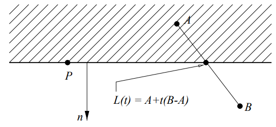
we want t such that ℓ(L(t))=0, ie (L(t)−P)⋅n=(A+t(B−A)−P)⋅n=0, and so
t=(A−B)⋅n(A−P)⋅n=(A−P)⋅n−(B−P)⋅n(A−P)⋅n
not we can reuse the computed values from trivial tests. finally, just clip four halfspaces in turn.
algo (liang-barsky):
clip_line_segment(A, B):
for each edge P, n:
wecA = (A - P) ⋅ n
wecB = (B - P) ⋅ n
if wecA < 0and wecB < 0:
returnfalse// outsideif wecA >= 0and wecB >= 0:
return A, B // inside
t = wecA / (wecA - wecB)
if wecA < 0: // in diagram
A = A + t * (B - A)
else:
B = A + t * (B - A)
return A, B
note:
can clip any convex window
optimizations can be made for horizontal and vertical window edges
for 3D
half-space now lies on one side of a plane
plane also given by normal and point
implicit formula for plane in 3D is same as that for line in 2D
parametric formula for line to be clipped is unchanged
projections
projections
perspective projection:
identify all points with a line through the eyepoint
slice lines with viewing plane, take intersections point as projection
not affine transformation, but projective transformation
opposed to parallel orthographic where direction of projection is parallel to projection plane
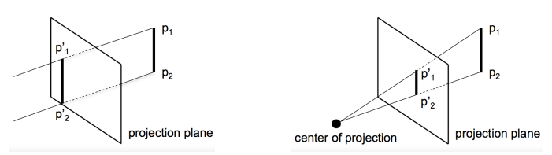
projective transformation:
angles are not preserved as in affine transformation
distances are not preserved as in affine transformation
ratios of distances are not preserved
affine combinations are not preserved
straight lines are mapped to straight lines
cross ratios are preserved:
b1:b2a1:a2=b1′:b2′a1′:a2′
affine transformation
projective transformation
image of 2 pts on a line determine image of line
image of 3 pts on a line determine image of line
image of 3 pts on a plane determine image of plane
image of 4 pts on a plane determine image of plane
in dimension n space, image of n+1 points/vectors defines affine map
in dimension n space, image of n+2 points/vectors defines map
vectors map to vectors v=Q−R=R−S⟹A(Q)−A(R)=A(R)−A(S)
mapping of vectors is ill-formed v=Q−R=R−S⟹P(Q)−P(R)=P(R)−P(S)
can represent with matrix multiply
can represent with matrix multiply and normalization
numerator and denominator can be positive or negative, creating ambiguity
normalization expended on points that are subsequently clipped
instead in homogeneous coordinates: −∣w∣≤x,y,z≤∣w∣
in order to graphically represent a homogeneous point, we could draw four axes. however for simplicity, we can draw a pair x,w, similar for other pairs.
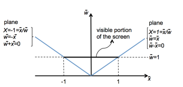
assume we have NDC window of [−1,1]2. to clip to X=−1:
projected coordinates: clip to X=−1
homogeneous coordinates: clip to wx=−1
homogeneous plane: w+x=0
the point is visible if w+x>0. assume we have a line (1−t)p1+tp2, then the boundary point is:
where VT is viewing transformation, MT is modelling transformation. the result will be available for clipping, homogenization and projecting to viewport.
polygons
simple polygon:
planar set of ordered points v0,...,vn−1 (sometimes we repeat at end of list)
no line crossing
no holes
points ordered counterclockwise
normally define an interior and exterior
try to avoid degeneracies (plane shrinking into line), but sometimes unavoidable
the winding number is # of leaving-intersections - # of entering-intersections if we shoot a ray from inside the polygon. if it is > 0, then point is inside.
polygon is convex if for any two points inside polygon, the line segment joining them is also inside.
convex polygon behave better in many operations
affine transformations may introduce degeneracies, eg orthographic projection may project entire polygon to a line segment.
polygon clipping
requirements:
window must be convex
polygon to be clipped can be convex or not
given polygon v1,...,vn
the edges are v1v2,...,vn−1vn,vnv1
idea: process all polygon edges in succession against a window edge, then repeat for next sequential window edge
comparison with line clipping:
line:
clip only against possibly intersecting window edges
deal with window edges in any order
deal with line segment endpoints in either order
polygon:
each window edge must be used
polygon edges must be handled in sequence
polygon edge endpoints have a given order
stripped-down line-segment/window-edge clip is a subtask
algo (Sutherland-Hodgman):
case 1: polygon edge is entirely inside window edge
let s:=vi be starting vertex, p:=vi+1 be ending vertex, i be intersection point, wj be next polygon vertex output
p is next vertex of resulting polygon
w[j] = p; ++j
case 2: polygon edge crosses window edge going out
i is next vertex of resulting polygon
w[j] = i; ++j
case 3: polygon edge entirely outside window edge
no output
case 4: polygon edge crosses window edge going in
i,p are next two vertices of resulting polygon
w[j] = i; w[j+1] = p; j += 2
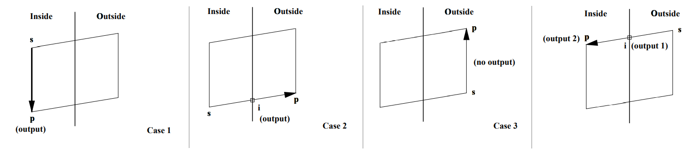
polygon scan conversion
once mapped to device coordinates, want to scan convert polygon
scan converting a general polygon is complicated
here we look at scan conversion of a triangle
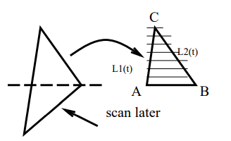
look at y value of vertices. split triangle along horizontal line at middle y value
step along L1, L2 together along the scan lines from AC and from BC respectively
scan convert each horizontal line
algo:
// assume triangle has been split and A,B,C are in device coordinates// and A.x < B.x, A.y = B.y != C.y
scan_triangle(A, B, C):
// we plot pixels incrementally using the slopeauto y = A.y
d0 = (C.x-A.x)/(C.y-A.y) // 1 / slope of AC
d1 = (C.x-B.x)/(C.y-B.y) // 1 / slope of BC
x0 = A.x
x1 = B.x
while Y <= C.y:
for x = x0, x1:
plotPixel(x, y)
x0 += d0
x1 += d1
++y
line segment scan conversion (DDA)
assume we have a line of positive slope:
y=mx+bm=x2−x1y2−y1b=y1−mx1
if slope is <= 1, then we sample at unit x unit intervals (Δx=1) and compute successive y value as
yk+1=yk+m,k=1,...
if slope > 1, then we reverse the roles of x and y (Δy=1) and compute successive x value as
xk+1=xk+m1
given if we draw from left to right. note for drawing pixels, we have to round the (x, y) to nearest integer, but for next iteration we keep the decimals.
Week 6. Feb 8
hidden surface removal
when drawing lots of polygons, we want to draw only visible to viewer.
kinds:
image-precision: visibility determined point by point at each pixel position n projection plane
object-precision: compare objects directly with each other and discard entire/partial objects if they are not visible
backface culling
if polygon normal is facing away from viewer (N⋅V>0) then it is backfacing and are removed
note V is vector from eye to point on polygon; cannot use view direction for this
for solid objects, it means the polygon will not be seen by viewer
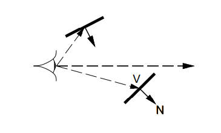
drawback:
the polygon must enclose a volume (if two sided, then cannot use)
if objects are nnt convex, need to do more work
advantages:
fast, can discard at least half the polygons
usually performed in conjunction with other algorithms
easy to integrate to hardware
painter's algorithm
steps:
sort polygons on farthest z
resolve ambiguities were z's overlap
there are nasty cases where splitting polygons are needed
scan convert from largest z to smallest z
since closest polygons are draw last, they are on top
it is Ω(n2) algo with lots of subtle detail.
advantage:
device independent
drawback:
needs all polygons in advance (not online algo)
tough detail
slow
warnock's algorithm
it is divide-conquer algo.
warnock(polylist, viewport):
if the polygon list in 'simple' in viewport, then draw polygons
simple means there is <= 1 polygon clipped to viewport
and viewport is only 1 pixel in size
shade pixel based on closest polygon in the pixel
otherwise:
split the viewport vertically and horizontally into 4 sub-viewports
for each sub-viewport:
warnock(polygon list in sub-viewport, sub-viewport)
runtime: O(pn) where p is # of pixels and n # of polygons
advantage:
easy implementation
drawback:
not very fast
semi-device dependent
this algo can be seen as one of first uses of quadtrees.
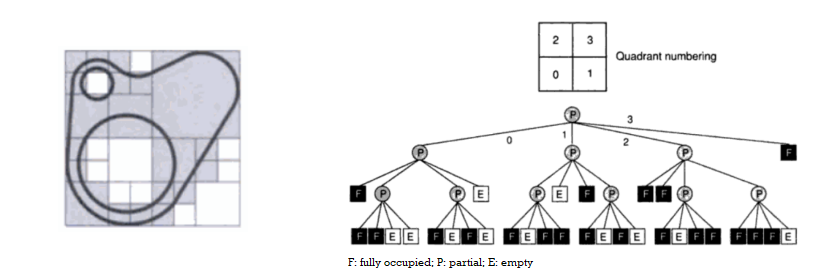
z-buffer algorithm
perspective transformation maps viewing pyramid to viewing box in a manner that maps lines to lines, it also maps polygons to polygons
idea: when scan convert, step in z as well as x and y
in addition to framebuffer, we have a depth (z) buffer where we write z values
initially, z buffer values set to infinity
(depth of far clipping plane (z=1) will also suffice)
(the choice of data type of z is important depending on the range of z)
it is image-precision algorithm
// assume triangle has been split and A,B,C are in device coordinates// and A.x < B.x, A.y = B.y != C.y
scan_triangle(A, B, C):
auto y = A.y
d0 = (C.x-A.x)/(C.y-A.y)
d0z = (C.z-A.z)/(C.y-A.y)
d1 = (C.x-B.x)/(C.y-B.y)
d1z = (C.z-B.z)/(C.y-B.y)
x0 = A.x
z0 = A.z
x1 = B.x
z1 = B.z
while Y <= C.y:
auto z = z0
d2z = (z1-z0)/(x1-x0)
for x = x0, x1:
plotPixel(x, y, z)
z += d2z
x0 += d0
z0 += d0z
x1 += d1
z1 += d1z
++y
plotPixel(int x, int y, float z, colour):
if z < zbuf[x][y]:
zbuf[x][y] = z
framebuffer[x][y] = colour
runtime: O(pc+n) where pc is # of scan converted pixels, n is # of polygons
it is algorithm of choice for hardware implementation
advantages:
easy implementation
simple hardware implementation
online algorithm
drawback:
doubles memory usage (at least)
scale/device dependent
viewing dependent
binary space partitioning
the objects are built into a tree of 'front' and 'back's
pick any object as the root
for objects in front of root, recurse and attach the root as the 'front' child
for objects in back of root, recurse and attach the root as the 'back' child
an object may be in both front and back, then spitting is required (1 triangle -> cut into 3)
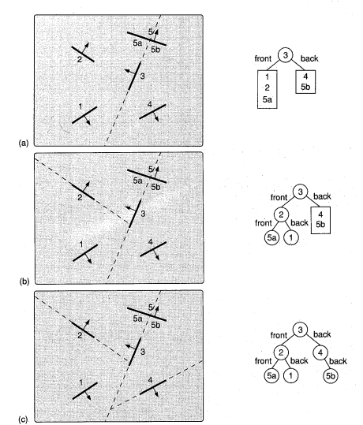
to draw the scene, if viewer is in root's front halfspace, do tree traversal:
first draw back children
then draw roots
finally draw front children
otherwise reverse order of traversal.
this algo is object-precision, viewing-independent and 'geometry-load' (not online).
background of light
practical choice: geometrical optics and radiative transfer theory
simulation of interference, diffraction and polarization usually requires more computation
it is more efficient to model light as rays (with energy) rather than waves
we mainly consider 'white' light (flat spectral distribution).
types of process of light emission:
thermal: heat => light
luminescent light emissions: incident energy => electron excited => electron return to ground state => photon
fluorescence, phosphorescence
assumption: energy associated with an an wavelength λ1 is independent from energy at another wavelength λ2
we also assume light interacting with a material comes from a light source without being subject to scattering phenomena (eg indirect skylight).
radiometric quantities:
radiant energyQ: fundamental quantity representing energy of a packet of rays
in light transport simulations, it is usually assumed that there is a steady state of energy flow representing the amount of light hitting a surface or film plane during a set period of time
unit: joules
radiant power/fluxΦ:
unit W or J/s
radiant intensityI: amount of radiant power travelling from source in a certain direction, per unit of solid angle
unit: W/sr
solid angle ω: by a surface area S with radius r is equal to r2S sr
dω=r2dA=sinθdθdϕ
radianceL:=dAcosθdI(x,ψ)=dωcosθd2Φ(x,y)
is neither dependent on the size of the object being viewed, nor on the distance to the viewer
when a radiometric term is written at a specific wavelength, it is called a spectral radiometric term.
appearance
variations in spectral distribution of light distributed by a material:
hue: attribute of color perception by means of which an object is judged to be red, yellow, green, blue, purple and so forth
lightness: attribute by which white objects are distinguished from gray objects, and light from dark objects
saturation: attribute that indicates degree of departure from the gray of the same lightness
when light interacts with material, it can be also propagated (reflected/transmitted) following different spatial distributions depending on the material microstructure.
measurements of distribution of propagated light: reflectance and transmittance:
nine different representations of reflectance and transmittance
depending on incident and propagated light geometries:
directional geometry: designates a differential solid angle dω about a single direction ψ=(θ,ϕ)
conical geometry: designates a solid angle ω of any configuration (eg right circular cone)
hemispherical: designates a full hemispherical solid angle ω=2π
directional-hemispherical geometry assumed
reflectance: fraction of light at wavelength λ at point x th`at is neither absorbed into nor transmitted through given surface
light that is neither reflected nor transmitted is absorbed. all three quantities sum to 1.
spatial patterns of light distributions:
bidirectional scattering-surface distribution function (BSSDF)
bidirectional scattering-surface reflectance distribution function (BSSRDF)
bidirectional scattering-surface transmittance distribution function (BSSTDF)
difficult function to measure, store and compute due to incidence and outgoing dirs, wavelength and position and surface
simplified: bidirectional scattering distribution function (BSDF/BDF)
bidirectional reflectance distribution function (BRDF)
bidirectional transmittance distribution function (BTDF)
assumes uniform scattering properties, then dependence on the location of point of observation can be omitted
f(ψi,ψ,λ)=Li(ψi,λ)dωicosθidL(ψ,λ) = ratio between radiance propagated at surface in direction ψ and radiant energy (/unit area/unit time) incident from a direction ψi at surface
eg. BRDF special case: perfect diffuse where incident light is reflected equally in all directions. so the BRDF is simply a constant (π1).
Week 7. Feb 15
tristimulus values
it is possible to quantify the effect stimulating cones of the eye:
⎣⎡lms⎦⎤=∫VLp(λ)⎣⎡l(λ)m(λ)s(λ)⎦⎤dλ
it is an inner product over visible spectrum V of the input stimulus Lp(λ) projecting onto the spectral sensitives of the cones: l for long wavelength region, m for medium wavelength region, s for short wavelength region.
the x,y,z are the color matching functions (CIE 1931).
CIE chromaticity diagram:
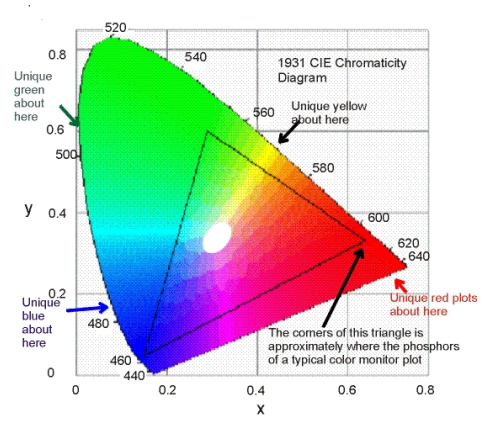
the colors in the diagram are specified using chromaticity coordinates using the CIE XYZ tristimulus values:
x=X+Y+ZXy=X+Y+ZYz=1−x−z
the result factors out effects of brightness.
the xyz is device-agnostic system.
one can convert the spectral signal Lp(λ) resulting from rendering applications to RGB values, by employing RGB tristimulus values r,g,b using some device-dependent transformation T:
⎣⎡r(λ)g(λ)b(λ)⎦⎤=T⎣⎡x(λ)y(λ)z(λ)⎦⎤
eg. to obtain T for the standard CRT:
x
y
z
red
.63
.34
.03
green
.31
.595
.095
blue
.155
.07
.775
white
.313
.329
.358
first we use the entries to write
A=⎣⎡xryrzrxgygzgxbybzb⎦⎤
using the coordinates of thw white point compute
b=A−1⎣⎡ywxw1ywzw⎦⎤
let C be the matrix whose diagonal is the entries of b, the answer is T=(AC)−1.
after obtaining r,g,b, the tristimulus color is quantified by sampling spectral signal:
where the range of V can vary based on individuals. in practice, summations are used.
metamerism: multiple kinds of light sources finally appear the same in viewer's eyes. eg: materials with different reflectance appear the same color under one illuminant. it is both a blessing and a curse
for dyes for clothing, metameric shifts between store lighting, daylight, etc
however, we can use a scanner or camera as a measuring device to approximate reflectance
gamma
monitors are not linear with respect to input. as an approximate characterization of this nonlinearity, monitors are commonly characterized by a gamma value (which is a degree of freedom):
displayed itensity=aγ⋅maximum intensity
where a∈[0,1] is the input pixel value.
usually, we can use this chessboard to correct our input so that a value of a=0.5 is displayed with intensity halfway between black (0) and white (1). the gamma of a monitor can be inferred by finding a gray value that appears to have the same intensity as the black and white pattern. once we have the gamma, using the transformation a↦aγ/1, we will get displayed intensity = maximum intensity.
optics
materials are characterized by the complex index of refraction:
N(λ)=μ(λ)+jk(λ)
λ is wavelength
μ(λ) is real index of refraction (how much an EM wave slows down relative to its speed in vacuum)
k(λ) is extinction coefficient (how easily an EM wave can penetrate into medium)
when light hits smooth surface, reflection occurs:
the law of reflection says incident angle θi is equal to reflection angle θr, and will on in the same plane n. the angle can be obtained: cosθi=∣n∣∣i∣n⋅i. so we can get the reflection direction:
r=i+2cosθin=i−2(i⋅n)n
the law of refraction says μisinθi=μtsinθ. then the refraction direction is given by:
t=−ncosθt+msinθt
where m is a vector perpendicular to n and is in same plane as n,i.
by [P.S. Heckbert. Writing a ray tracer. In A. Glassner, editor, An Introduction to Ray Tracing, San Diego, CA, 1989. Academic Press] it can be expanded:
when θt≥90° (sqrt becomes negative), we have total internal reflection. the critical angle is θc=arcsin(μiμt).
[E Hecht and A. Zajac. Optics. Addison-Wesley, Reading, Massachusetts, 1974] at an interface between dielectrics, light can also be attenuated, which is given by the Fresnel coefficients for reflection and transmission. it can be split into directions perpendicular and parallel to an interface:
for any k. FR for polarized light is the weighted sum of the polarized components, in which the weights must sum to one. for unpolarized light, the coefficient is the average of the two components. when k=0, it is:
where cit=cosθicosθt,nit=ηiηt. these equations apply without regard to the direction of propagation. we also remark there is no absorption at an interface between dielectrics, so the Fresnel coefficient for transmission is simply FT=1−FR. once light is transmitted into medium, absorption may occur.
local illumination models
Lambertian model for diffuse materials: suppose
it propagates light equally in all directions
amount of light propogated is directly proportional to the cosine of the angle of incidence θi.
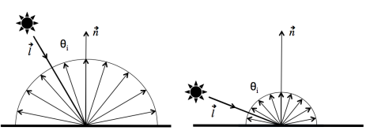
[A.S. Glassner. Principles of Digital Image Synthesis. Morgan Kaufmann Publishers, Inc, San Francisco, 1995.][F.E. Nicodemus, J.C. Richmond, J.J. Hsia, I.W. Ginsberg, and T. Limperis. Geometrical considerations and nomenclature for reflectance. In L.B. Wolff, S.A. Shafer, and G.E. Healey, editors, Physics-Based Vision Principles and Practice: Radiometry, pages 94–145, Boston, 1992. Jones and Bartlett Publishers.] as consequence, the BRDF of a perfect diffuse model is given by πρ, where ρ is the material's reflectance. then we have
where Lin,out are incident and propagated (outgoing) rediances, ψi,ψ are directions of incidence and propagation. in the second equation, reflectance is replaced by coefficient kd usually an RGB triple representing color of material.
for complete environment, Lambertian lighting model is:
Lout(v)=∫ΩπkdLin(l)(l⋅n)dσl
where Ω is the hemishpere of all possible incoming directions and dσ is the solid angle measure. if kd∈[0,1], then factor of π is required to conserve energy.
normally we do summations. for complete environment, after considering attenuation, multiple lights and ambient light, there is:
the denominator is responsible for attenuation for some constants c1,c2,c3 (inverse square law is too harsh).
kaIa is ambient light (inttensity) with a constant ka (usually RGB triple)
this is approximation as computing real global light interactions can be expensive
omitting global interaction may make the object look too dark
if we want to simulate appearance of material that have perfect specular (mirror) light propogation bahavior, we can use law of reflection to obtain reflected vector. similarly if we want coherent transmission (for transparent materials), use Snell's law to get transmitted vector.
specular reflection
Lambertian term models matte surface but not shiny ones as they have 'hightlights' because energy reflected depends on viewer's position.
the classic Phong Bui-Tuong lighting model is:
Lout(v)=kaIa+kd(l⋅n)Id+ks(r⋅v)pIs
or using the previous notation:
ρ(v,l)=kd+ksn⋅l(r⋅v)p
where
the vector r is l reflected by the surface: r=−l+2(l⋅n)n
exponent p controls sharpness of highlight
small => wide highlight
large => narrow highlight
specular term at a maximum ks when v=r
Blinn introduced the Blinn-Phong lighting model variation:
Lout(v)=kaIa+kd(l⋅n)Id+ks(h⋅n)pIs
where
the halfway vector h=∣v+l∣v+l
it avoids angle >= 90 degress that result in unplausible result when utlized by other components of Phong model's formulation
the value h⋅n measures deviation from idal mirror configuration of v and l
openGL uses blinn-phong model
shading
shading corresponds to the darkening or coloring an object.
given Lin,l and surface properties (including surface normal), we want Lout in direction v
need surface at every point
commonly surface is polygonal:
true polygonal surface: use polygon normal
sampled surface: sample position and normal, create polygonal approximation
also want colour of each pixel in rasterized surface
flat shading: shade entire polygon one colour
do calculation at
one polygon vertex: center of polygon
or all vertices and average colours
problem: surface looks faceted. not good for curved surface
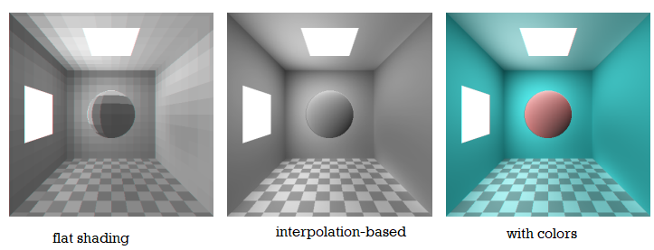
gouraud shading
Gouraud shading interpolates colours across a polygon from the vertices.
lighting calculations only performed at vertices
interpolation is well-defined for triangles
it is not good idea to extend to convex polygons... try convert to triangles?
Barycentric combinations are also affine combinations. triangular gouraud shading is invariant under affine transformations.
to implement, can use repeated affine combination along edges, across spans during rasterzation
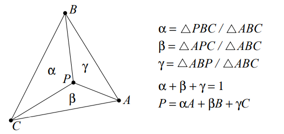
shading by slicing: for polygons with more then 3 vertices, do
sort vertices by y-coordinate
slice polygon into trapezoids with parallel top and bottom
interpolate colours along each edge of the trapezoid
interpolate colours along each scanline
problem: not invariant under rotation:
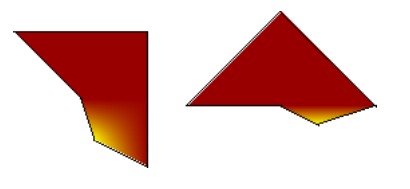
triangulate and shade: make triangles then shade triangles
problem: expensive, and can see triangulation
mean value coordinates: provides generalization of Barycentric coordinates
wi=Ai−1Airi+1Ai−1−riBi+ri−1Ai
where ri=∣∣P−Pi∣∣. this is not normalized. to normalize, devide by ∑iwi.
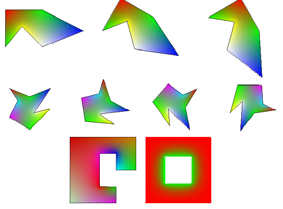
bilinear interpolation: a patch from an object is a polygon depidcted by parameters u,v in its parametric form.
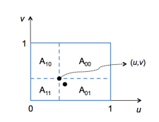
the areas can be expressed as:
A00=(1−u)(1−v)A01=(1−u)(v)A10=u(1−v)A11=uv
then using vertices' colors Cij, we can interpolate colors using:
Color(u,v)=C00A00+C01A01+C10A10+C11A11
the bilinear interpolation is subject to Mach band effect, which is illusion that suggest the presence of edges where in fact the radiance values are varying smoothly.
Gouraud shading is usually used in shading of objects characterzied by a diffuse (Lambertian) light reflection behavior. it cannot handle highlights properly (they will vanish).
eg. how to mitigate mach band effect and disappeared highlights? use non-linear interpolation.
phong shading
phong shading interpolates lighting model parameters, not colours.
much better rendition of highlights
a normal is specified at each vertex of a polygon
vertex normals are independent of the polygon normal
they should relate to the surface being approximated by the polygonal mesh
the normal is interpolated across the polygon (using Gouraud techniques)
nominally done by vector addition and renormalization
several 'fast' approximations exist
view and light vectors may also be interpolated or approximated
steps:
for each pixel:
interpolate the normal
interpolate other shading parameters
compute the view and light vectors
evaluate lighting model
the lighting model does not have to be the Phong lighting model.
phong shading can be simulated with programmable vertex and fragment shaders on modern graphics hardware:
classic gouraud is linear in device space
modern graphics hardware performs rational linear interpolation
interpolating normals, view vectors and light vectors using generic interpolation hardware
usually also interpolate diffuse term after computing it in vertex shader
other kinds of advanced shading is possible
scene graph
we can use a hierachy to organize multiple objects in a scene. each child will be some transformation in coordinates relative to its parent.
transform ferry to model using M0
transform car body to model using M0M1, where M1 is used to transform it to the ferry's coordinate (rotation, translate)
transform left wheel to world using M0M1M2
a matrix stack can be used traverse such hierachy:
traverse(root):
push(root.M) // local
draw object using composite matrix from stackfor child in root.children:
traverse(child)
pop()
note scaling matrix, you probably do not want this to apply to children.
Week 9. Mar 1
ray tracing
problem: many rays never reach eyes
idea: trace rays backword from eye
only works for BSDF
for each pixel:
ray = (eye, pixel - eye)
intersect(ray, scene)
// shade the hit object
the objects whose intersection points are closest to screen are visible, and pixels associated with their projection on screen are shaded accordingly.
need to do:
know which pixels
perform intersections
perform shading
ray casting/tracing
ray casting: selecting the initial ray.
ray: half line determined by eyepoint and a point associated with chosen pixel
interpretations:
ray is path of photons that reach eye
ray is sampling probe that gathers color/visibility information
setting: eyepoint, virtual screen (array of virtual pixels) and scene are organized in a convenient coordinate frame (eg view/world)
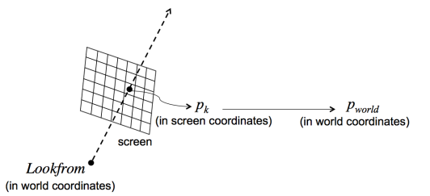
to determine ray direction, we need world coordinates of the pixels traversed by the ray. given a screen coordinate pk(xk,yk), we utilize the pipeline in reverse order using parameters image size (nx,ny), look-from, look-at, up vectors, fov θ, aspect ratio w/h and a distance d (focal length) in world coordinates
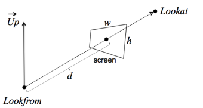
steps:
let zk=0 and traslate (xk,yk,zk) by (2−nx,2−ny,d) with translation matrix T1
scale by (ny−h,nxw,1) where h=2dtan2θ using scaling matrix S2 to preserve aspect ratio and change the x-axis direction. we get viewing coordinates
rotate by R3=[u,v,w,e4] where
w=∣Lookat-LookFrom∣Lookat-LookFrom
u=∣Up×w∣Up×w
v=w×u
translate by (LookFromx,LookFromy,LookFromz,1) with T4
the result pworld is T4R3S2T1pk.
the ray can be written as:
origin: LookFrom
direction: pworld - LookFrom
puzzle. do we need to use perspective matrix? no. we fix the eye position, so rays have different directions, so perspective is already accounted for. to have orthographic-like projection, put rays through each pixel in same direction.
intersections
triangles:
with vertices P0(x0,y0,z0),P1(x1,y1,z1),P2(x2,y2,z2), the parametric form for a triangle is
P(x,y,z)=P0+β(P1−P0)+γ(P2−P0)
where 0≤β,γ≤1.
the ray can be expressed parametrically as
P(x,y,z)=a+t(b−a)
where a is ray origin and 0≤t≤1. b−a gives ray direction.
letting two equations equal we can get the intersection point:
consider sphere with center c and radius r defined implicitly as:
(P−c)⋅(P−c)=r2(Px−cx)2+(Py−cy)2+(Pz−cz)2=r2
to get intersection, we substitute ray's equation into this equation to get
(b−a)2t2+(b−a)⋅(a−c)2t+(a−c)2−r2=0
zero root: ray misses sphere
one root: ray is tangent to sphere at single point
two roots: ray hits sphere then leaves
if we want a intersection point between point of origin of the ray (a) and a specific destination point (b), then we should test for 0≤t≤1. in the case of two intersections, we pick the closest to the origin.
basic ray tracing
after obtaining primary rays, intersections with basic primitives, we can trace the rays through the scene to determine the color of a specific pixel on screen.
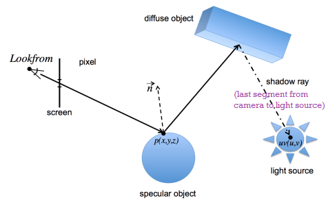
ray_color(ray r, point2D uv, int maxHits):
auto [
hit,
kd, ks, ke, // color (RGB triples)
n, // normal at intersection point
t, // parameter of ray equation at intersection point
material_type // diffuse or specular
] = intersect(r, scene)
if hit:
Color col = ke*Le + kd*La // Le: emitted radiance, La: ambient radiance
p = ray(t) // intersection pointif material_type is diffuse:
col = col + kd * direct_light(p, uv)
if material_type is specular and maxHits < /* preset value */:
auto reflected_ray = reflection(r.direction, n)
col = col + ks * ray_color(reflected_ray, uv, maxHits+1)
return col
else: // no object is hit, use background colorreturn background_color // RGB triple
uv corresponds to a 2D point whose values correspond to random numbers in [0, 1]
maxHits is used to limit how many times a ray can bounce to avoid infinite loops (eg mirrors facing each other). it also makes physical sense as as light is attenuated each time its contribution becomes ignorable
intersection also returns surface normal and object's type
direct_light computes contribution of the light source
it tests the intersection of a shadow ray (originating on a diffuse object) with any object in the scene. The shadow ray has as its origin the intersection point on the last intersected diffuse object, and as its destination a point (specified by parametric coordinates u and v) on the light source. If there are no objects intersected by the shadow ray between its origin and destination, then the contribution from the light source is accounted for. Otherwise, it is not. If there are more than one light source in the scene, this process is repeated for each one of them.
note that, if a ray other than a shadow ray hits a light source and there are no other light sources in the scene, the ray propagation is terminated and the contribution of the light source is accounted for without the need of computing a shadow ray
just use the diffuse shading model
reflection gets the ray reflected on the specular object using law of reflection
as an extension, refraction can be used for transparent objects by using law of refraction recursively, similar to above
surface normal is required to obtain indicence angles required by law of reflection and refraction.
for simple polygon, use cross product to get normal
for implicit objects, use gradient: ∇=[∂x∂,∂y∂,∂z∂]
for OO design, we should have some base class Surface with derived classes Triangle, Sphere, Group with intersect virtual methods.
aliasing
raster image sampling is a sampling of a continuous function. if they sample too far apart, the we do not get true representation of scene.
can get stairstep/'jaggies', moire patterns, loss of small objects
temporal: backward rotating wheels (sample too far apart in time), crawling jaggies, flashing objects
nyquist limit:
regular sampling restricts frequencies at which we sample
nyquist limit: theory tells we must sample at twice the highest frequency in image to avoid aliasing
trouble: man-made objects have distinct edges -> infinite frequency
resolution:
after getting image, run low pass filter: not full solution
use higher resolution monitor:
alleviates jaggies
but does not help much with moire patterns
small objects still vanish
CPU load
better sampling:
area sampling: treat lines as boxes and color shades based on fraction of pixel covered
gives better images at sufficiently far distance
looks blurry if too close
weighted sampling: give different weights depending on position in pixel
unweighted sampling is a box filter: I=∫x∈BoxIxdI with equal contributions
filter may extend outside pixel: avoids certain temporal aliasing problems
'correct' filter is infinite
ray tracing:
can not always integrate under pixel
super sampling: take more samples and weight with filter
if sampling pattern is regular, then still get aliasing
stochastic sampling: 'jitter' the samples by
choose random location within pixel
or displace small, random distances from regular grid
idea: eye is sensitive to coherent errors (causing aliasing), but poor at incoherent errors (noise)
sampling improvements
regular sampling (a): pixels divided into strata/regions, and one sample is placed at centers
low cost, error is regular is more probable for aliasing
random sampling (b): randomly select samples within pixel
low cost, may result in clumping or clustering of samples
jittering (c): pixels divided into regions and random sample is placed in each
higher cost, less regularity in errors and less clumping
oversampling: by increasing number of rays per pixel, one can also mitigate other limitations of the basic ray tracing framework such as sharp shadows, sharp reflections, sharp refractions, but they also add cost.
distributed ray tracing approach by [R.L. Cook, T. Porter, and L. Carpenter. Distributed ray tracing. Computer Graphics (SIGGRAPH
Proceedings), 18(4):165–174, July 1984.] consists in stochastically distributing (perturbing) rays rather than simply adding many more of them:
gloss/translucency: perturb reflection/refraction directions of the 'ideal' reflected/transmitted rays;
soft shadow: perturb shadow rays by sampling their destination on the area sources using similar approaches used to sample the rays' traversing positions on the pixels;
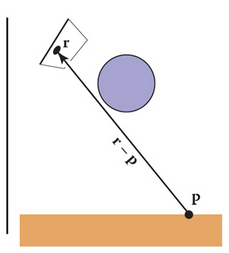
depth of field: instead of a virtual pinhole camera, consider a virtual camera with lens, and perturb the primary rays using the lens' optical parameters, take average;
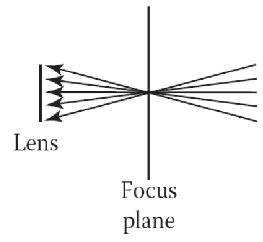
meaning that the radiance of a point x on a surface in direction ψ and wavelength λ is given by the sum of the emitted radiance component Le and propagated radiance component Lp. usually Le is known, and the computation of Lp is the major computational problem.
for ray tracing framework for the simulation of light propagation mechanisms, Lp can be computed as
θi is angle between surface normal at x at direction ψi
dωi is differential solid angle where Li arrives.
fr is BRDF (reflection), and BTDF for transmission is analogous
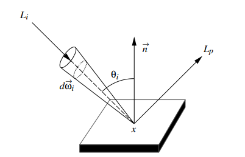
the ray tracing uses determinstic methods (gaussian quadrature) or probabilistic methods to solve the integral. more specifically, new directions followed by a ray are sampled recursively at each intersection point such that
where Lr is reflected radiance. each ray bounce can be seen as a state of a random walk.
Week 10. Mar 8
texture mapping
if we want to render a brick wall, we could geometrically model the details of each brick and the grooves between them... but can also simply map a raster file depicting a brick wall.
we can do texture mapping in different rendering pipelines or ray tracing. if done by ray tracing, we do
find intersection point p(x,y,z) on the surface
convert to u, v coordinates between [0, 1] of the (parametric) surface
pick correct pixel/color from the raster file using weighted average
eg. suppose we want to map the texture file (right) to the rectangular region (left),
after getting the point p(u,v), find the corresponding location in the raster file:
di=(w−1)u,dj=(h−1)v
then find up,vp in [0, 1] for that pixel
i=int(di),j=int(dj),up=di−i,vp=dj−j
make sure they are within the raster file and clamp if needed (unless we want to repeat). then obtain the color of surrounding pixels:
how to find the transformation from p(x,y,z) to (u,v)? for complicated (curvy) surfaces, can use
geometry methods
orthographic/projective mapping: just use the same Ortho or P matrix to map p(x,y,z) to (u,v) and discard z. viewing direction can be averaged normal. works ok for mostly flat surfaces.
for sphere-like objects, use spherical coordinates (θ,ϕ) (discard ρ)
for cylinder-like objects, use cylindrical coordinates. note projection outward from an axis works better than projection from a point to sphere
cubemap: just enclose the object with cube with 6 faces, and apply projective to each of them
interpolated texture coordinates: for mesh of triangles, we can store u, v values excplicitly in each triangle, then use barycentric interpolation to paint
with perspective correction interpolation
[Ch 11 "Fundamentals of Computer Graphics" by S. Marschner and P. Shirley]
the main idea is straightforward, but it requires attention for correct use, eg
different surfaces can have distinct parametric representations
the application of texture on certain surfaces may require special adjustments to avoid distortion or to aliasing,
and the texture mapping objects composed of many parts may lead to apperance continuity issues.
seam: curve on the surface where the texture coordinates change suddenly so that we can have low distortion everywhere else
if needed, tile the polygon
for some textures, tiling introduces unwanted pattern
there are various method to extend textures
improves image
bump (normal) mapping
in texture mapping, textures appear smooth (no shadows) or wrong
similar to texture mapping, but we peturb the normal rather than color
bump information is provided in a raster file (bump map)
perturbed normal is used for lighting caculation
result is convicing - usually fail to notice silhouette is wrong
eg. suppose a surface represented parametrically by Q(u,v) where 0≤u,v≤1. its tanget Qv,Qu can be computed using partial derivatives.
we can then compute
X=N×Qv,Y=N×Qu
then the displacement is:
D=BuX−BvY
where Bu,Bv are partial derivatives (tangents) of the bump map at B(u,v). using user-defined threshold ϵ (eg 1/64), these partial derivatives can be approximated:
Bu=2ϵB(u+ϵ,v)−B(u−ϵ,v)Bv=2ϵB(u,v+ϵ)−B(u,v−ϵ)
then we can get N′=N+D.
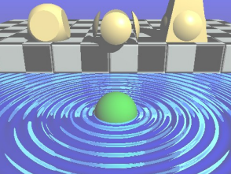
large geometric features require geometry (window wells)
the 'bumps' are not geometrically present, so this technique cannot be used to create shadowing (fraction of incoming light which is shadowed on the way in) and masking (fraction of reflected light which is obscured in the way out)
to have shadows, one could use displacement mapping that alters object's geometry
texture mapping adds flat detail (soup can detail)
normal mapping appropriate when angle of light affects shading in obvious ways (cylinder block walls)
misused normal maps draw unwatend attention (flickiering)
solid textures
it is hard to texture map onto curved surfaces, so we use a 3D texture. given a point p(x,y,z) on the surface, the color is T(x,y,z) where T is the texture field.
turbulance can also be created, for example in 1D:
turbulance(x)=i=0∑k∣∣[2inoise(2ix)]∣∣
where k is the smallest integer satisfying
2k+11<pixel size
using solid textres avoids the problem of continuity when painting multiple objects, but requires analytical formula.
shadow mapping and environment mapping
... read Sections 11.1, 11.2, 11.4 and 11.5 of the e-book "Fundamentals of Computer Graphics" by S. Marschner and P. Shirley
environment map: if light source is far from the object, then the object's lighting vary a little, so we can consider the only variable is the direction. we can view the light source as having a raster image that is to be used with spherical coordinates. for the object, it will be on the light source's sphere, so we can give it texture mimicking reflection of the sky.
performance
ray intersect object is often expensive and can be improved in two ways:
reduce cost of ray intersect object
intersect ray with fewer objects
bounding box:
place box or sphere around each object
only compute ray intersect object if ray intersects bounding box
if box is aligned with coordinate axes, ray intersect box is cheap
may be difficult to construct good bouding boxes
most useful when ray intersect objects is very expensive
be careful with CSG (constructive solid geometry) / hierarchy
if a ray misses the bounding volume at a given node
in the hierarchy, we can reject that node’s entire subtree from further consideration. results in logarithmic time
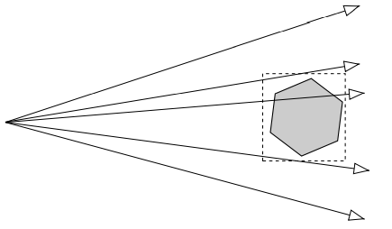
spatial subdivision:
divide space into subregions and place objects into appropriate subregions
when tracing ray, only intersect with objects in subregions through which the ray passes
useful when there are lots of small objects
may be difficult to determine subdivisions
can be regular (O(3N)), or adapted by distribution of objects (octree (O(logN)))
path tracing
in basic ray tracing approach, a ray path can have two branches: reflect and transmit. [J.T. Kajiya. The rendering equation. Computer Graphics (SIGGRAPH Proceedings), 20(4):143–150, 1986.] proposes extension that follows most probable path at each intersection and shoots rays toward light source. it can be seen as algorithm that samples most important paths
steps:
at intersection point, compute fresnel coefficient FR using refractive indices of the incidence medium and the transmission medium, and the incidence angle
generate random number x∈[0,1]
if x≤FR follow reflected ray using reflection law, otherwise follow transmitted ray using transmission law
note this applies to non-diffuse materials, for diffuse materials, no other ray propagates from them except shadow rays.
it can be altered by using weight w that is initially 1. after generating random number, we still follow reflected and transmitted rays but with weights wFR,(1−w)FR respectively. if weight is lower than some threshold, we stop (similar to counter).
this can be extended to be combined with distributed ray tracing approach
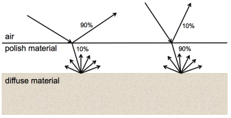
when ray hits interface between air and polish material, compute fresnel coefficient and compare with random number. for a ray reflected on the air-polish interface, we can perturb its direction, by polar and azimuthal angular displacements:
α=cos−1(1−x1)1/(np+1),β=2πx2
obtained by [G.V.G. Baranoski and J.G. Rokne. Light Interaction with Plants: A Computer Graphics Perspective. Horwood Publishing, Chichester, UK, 2004. Chapter 2.]. where x1,x2∈[0,1] are random, and np is phong-like exponent. larger np -> glossier surface.
when ray hits diffuse substrate, a reflected ray with a cosine distribution is generated by perturbing material's normal using polar and azimuthal angular displacements:
αd=cos−1(1−x3)1/2,βd=2πx4
where x3,x4∈[0,1] are random.
Week 11. Mar 15
radiosity method
standard (classic) radiosity method
like ray tracing method, the radiosity method can also be used to solve the rendering equation. instead of expressing Lp in terms of all directions visible to a point like in ray tracing, we consider term Lp witten as integral over all surfaces within the environment:
Li(x,ψi,λ): incident radiance at x in direction ψi
dAj: differential area surrounding xj
V: visibility term
need to determine oneself using BSP-tree or ray-casting
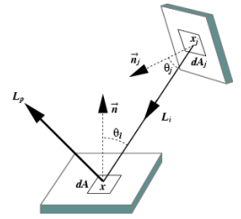
in this model, we use radiosity (radiant exitance) M instead of radiance (we use conversion M=πL later), and assume all surfaces are diffuse reflectors. we also use the concept of form factor.
defn. the form factor/configuration factor indicates how a patch i 'sees' a patch j, ie it specifies the ratio between the fractionn of radiant flux Φij that leaves patch i and arrives j, to the total radiant flux Φi that leaves patch i:
computation is form factors is usually the performance bottleneck. there are some identities that can be used to simplify the computation:
reciprocity: AiFij=AjFji
summation: ∑j=1nFij≤1∀i=1,2,...,n
if we assume a closed envornment, then the sum is 1
a planar of a convex patch cannot see itself, ie Fii=0
if we assume a closed enviverment whose surfaces are divided into n patches, then total radiant flux (power) leaving a patch depends on spectral radiant flux emitted by this patch plus spetral radiant flux reflected from the patch (recursively). also assume environment composes of only diffuse surfaces, then we can drop the directional and positional dependencies, and we have
Φj(λ)=ΦjE(λ)+ρj(λ)i=1∑nFijΦj(λ)∀j=1,2,...,.
where
Φj(λ): total spectral radiant flux leaving patch j
ΦjE(λ): spectral radiant flux emitted by patch j
ρj(λ): reflectance of patch j
Fij: form factor of patch i seeing patch j
Φi(λ): total spectral radiant flux leaving patch i
the perfect diffuse BRDF is for a patch j is given by:
fd(λ)=πρj(λ)
the π term is absorbed in the definition of form factor Fij.
we can write the equation as spectral radiant exitance (spectral radiant flux leaving an element per unit area) and spectral irradiance (spectral radiant flux emitted by element per unit area):
Φj(λ)=πMj(λ)AjΦjE(λ)=πEj(λ)Aj
where
Mj(λ): spectral radiant exitance of patch j
Ej(λ): spectral irradiance emitted by patch j
Aj: area of patch j
by substitution we get:
πMj(λ)Aj=πEj(λ)Aj+ρj(λ)i=1∑nFijπMi(λ)Ai
applying reciprocity relationship and divide by Ajπ, we get the classical expression in terms of spectral radiant exitance for patch j:
Mj(λ)=Ej(λ)+ρj(λ)i=1∑nFjiMi(λ)
["Modeling the Interaction of Light Between Diffuse Surfaces" by C.M. Goral et al.]
now we have a system of linear equations Gm=e whose coefficient matrix is G, the unknowns m are radiant exitances, and e is vector of irradiances. the elements of G are Gij=δij−ρiFij where δij is kronecker delta. the matrix is also called radiosity coefficient matrix and is commonly represented by:
G=I−PF
where P is a diagonal matrix whose diagonal entries pii=ρi, and F is form factor matrix.
since this matrix is sparse, and we do not need high accuracy but speed, direct methods like gaussian elimination and LU decomposition are not suitable. these aspects plus the special properties of G ir nonsingularity and diagonal dominance, iterative methods like conjugate gradient and the Chebyshev methods are more suitable.
as colors are usually represented as RGB triple, we need to solve this system 3 times. then we use interpolation techniques to get smooth picture.
[M.F. Cohen and J.R. Wallace. Radiosity and Realistic Image Synthesis. Academic Press Professional, Cambridge, 1993.]
improvements
increasing the number of patches by brute force will add computational cost (n(n-1)/2 interactions). hierarchical approaches can be used to capture conspicuous radiant exitance gradients in scene, such as wall corner that is more prone to illumunation changing, objects far away can be aggregated.. [A.S. Glassner. Principles of Digital Image Synthesis. Morgan Kaufmann Publishers, Inc, San Francisco,1995]
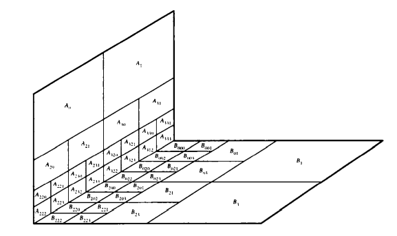
classical radiosity implementation assumes surfaces are diffuse. this can be relaxed, eg a mirros surface can be handled as a window to a environment identical to the one rendered
non-participating media: light attenuation by traversed medium (air) could be handled by use of global illumination techniques in conjunction with zonal strategies [P. Shirley. Physically Based Lighting for Computer Graphics. PhD thesis, Dept. of Computer Science, University of Illinois, November 1990.], involving surface-volume and volume-volume form factors..
in classical implementation, form factors are recomputed each time geometry changes. active researches are started to only recompute those has changed visibility [M.F. Cohen and J.R. Wallace. Radiosity and Realistic Image Synthesis. Academic Press Professional, Cambridge, 1993.]
radiosity via ray tracing approach
as in path-tracing strategy, consider a ray carries a certain amount of radiant power/rediant flux Φ. initially we pick a patch from which we shoot (cast) some rays to the environment. normally, the selected patch corresponds to a light source. as patches are assumed to be diffuse, rays follow cosine distribution, we perturb its normal and shoot the ray rd.
once we shoot the ray from light source, we recursively determine patches hit by the ray and record the information.
shoot_rays(int Nr):
auto n = newint[Nr] {0} // counter of number hits received by patch n[i]for patch i in patches:
for j = 0, Nr, 1:
auto ray = create ray rj with cos distribution from light source
auto maxHits = 0
find_patch(rj, maxHits)
return n
find_patch(Ray rj int maxHits):
auto [i, p] = find patch i hit by ray r at point p
++n[i]
auto u = random(0, 1)
if u <= patches[i].R and maxHits < /*predefined constant*/:
auto rd = generated reflected ray rd with cos distribution from p
find_patch(rd, maxHits) + 1
Nr is number of rays to shoot
patches[i].R is refkectance of patch i. if reflectance is RGB triple, then its value is the dominant normalized color component
after we trace random walks of the Nr rays shot from the light, we can compute the power incident on patch i as:
Φi=ΦtotalNrni
where Φtotal is user-specified value for total power shot from light source
since patches are diffuse, the radiance can be calculated as:
Li=πAiρiΦi
where ρi is the reflectance, Ai area of patch i [P. Shirley. A ray tracing method for illumination calculation in diffuse-specular scenes. In Graphics Interface, pages 205–212, Toronto, 1990. Canadian Information Processing Society.].
if reflectance is represented by RGB triple, this calculation needs to be calculated 3 times.
this method solves rendering equation by recursively computing reflected component, and can be represented as a Neumann series:
Lr(x)=E+frdiE+frdi(frdjE)+...
where E is light source irradiance and frdi=πρi is BRDF of diffuse patches.
if we shoot Nr rays with cos distribution from patch i and m rays arrive at patch j, then the form factor can be approximated as: Fij=Nrm.
one can also have diffuse, translucent, surfaces (lampshade). in this case, the algo would also consider rays transmitted with cos distribution, and the rendering equation will have a transmitted component handled similarly.
Ltotal=Lemitted+(Lreflected+Ltransmitted)
Note the color bleeding effect (when the diffuse reflection of a colored patch influences the color of another patch), typical of diffuse interreflections, on the sphere surface. Note also some degree of noise on the surfaces. Since diffuse surfaces reflect light in all directions, to closely approximate this behavior, one has to use a relatively large number of rays. Usually the presence of noise in images generated using stochastic techniques is associated with the use of an insufficient number of rays for a given scene.
standard multipass method
pros for ray tracing:
suitable for objects whose scattering behavior is closer to that of specular material
however to handle diffuse material, requires to sample large number of directions
pros for radiosity:
suitable for objects whose scattering is closer to that of a perfect lambertian (diffuse) material
however to handle high frequency signals (highlights), requires very fine patches
however we cannot simply combine them as they are based on different assumptions. moreover, the diffuse terms in the radiosity framework and the specular terms in the ray tracing framework depend on all incoming radiances, which can contain both diffuse and specular components.
standard multipass method has two main passes:
radiosity pass: generates results from multiple diffuse interreflections in the environment which are obtained using a relative coarse mesh. as radiosity is view-independent, it can be stored and used later to replace ad hoc ambient component
ray tracing pass: adds view dependent features (hightlights). the relative visibility of objects is normally handled in the stage.
note no single type of light should be included more than once in the computation of final radiance of point (patch). we can substract the direct component from the first pass.
the color-bleeding effect can be obtained using the radiosity pass.
in standard ray tracing method, we follow light backwards. there are view-independent effects like caustics (bright regions elicited by light rays reflected/refracted by curved surface or object acting as a lens) that require tracing forward. we can have a third pass to trace rays from light sources through non-diffuse objects, storing their contributions to nearby surfaces. if the surfaces are somewhat regualar (polygon) they can be stored in a simple matrix (illumination map), otherwise, more complex data structures like trees can be used.
Week 12. Mar 22
splines
splines: constructing curve segments.
sampling: looks bad if undersampled, and wrong if we edit
we want editable representation with 'nice' properties
cubic hermite curve
review about hermite cubics: a segment of a cubic Hermite spline allows the positions and first derivatives of both of its endpoints to be specified. A chain of segments can be linked into a C1 spline by using the same values for the position and derivative of the end of one segment and for the beginning of the next.
given a set of n control points, where every other control point is a derivative value, a cubic Hermite spline contains (n−2)/2 cubic segments.
Bernstein polynomials
linear blend: create segment from an affine combination of points using two control points:
P01(t)=(1−t)P0+tP1
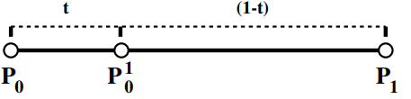
quadratic blend: create segment from an affine combination of line segments using three control points:
divide each segment in halves by ratio t:(1−t). join the t:(1−t) points of those line segments by line segments
repeat for the resultant points if necessary (until there is one segment)
the t:(1−t) points on the final line segment is a point on the curve
the final line segment is tangent to the curve at t
if we expand the terms, we see the original input points appear as coefficients of Bernstein polynomials:
P00(t)P01(t)P02(t)P03(t)...P0n(t) where =1⋅P0=(1−t)P0+tP1=(1−t)2P0+2(1−t)tP1+t2P2=(1−t)3P0+3(1−t)2tP1+3(1−t)t2P2+t3P3=i=0∑nPiBin(t)Bin(t)=(n−i)!i!n!(1−t)n−iti=(ni)(1−t)n−iti
properties:
the Bernstein polynomials of degree n form a basis of all degree-n polynomials
defn. a degree n (order n+1) Bézier curve segment is
P(t)=i=0∑nPiBin(t)
where Pi's are k-dimensional control points.
curve of degree n is controlled by n+1 control points. the curve interpolates its first and last control points, and the shape is directly influenced by the other points.
properties:
convex hull: since ∑i=0nBin(t)=1 and Bin(t)≥0∀t∈[0,1], P(t) is a convex combination of the points Pi for t∈[0,1], so lies within the convex hull of all Pi's.
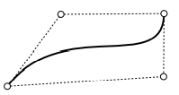
symmetric: reversing control points yeilds same curve (with reversed parameterization)
variation diminishing: any line segment intersects the curve no more times than it crosses the set of line segments connecting the control points
affine invariance: since bezier curve is affine combinations of its control points, any affine transformation of a curve is the curve of the transformed control points:
T(i=0∑nPiBin(t))=i=0∑nT(Pi)Bin(t)
does not hold for projective transformations
derivative: dtdBin(t)=n(Bi−1n−1(t)−Bin−1(t)), so P′(0)=n(P1−P0),P′(1)=n(Pn−Pn−1)
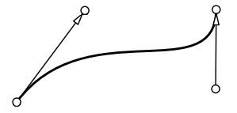
smoothly joined segments (C1): let Pn−1,Pn be last two control points for this this segment, and Q0,Q1 be first two control points of next segment, then Pn=Q0 and Pn−Pn−1=Q1−Q0.
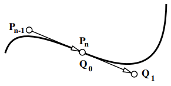
smoothly joined segments (G1): Pn=Q0 and Pn−Pn−1=β(Q1−Q0)∃β>0
when modelling, specifying derivatives can be either good or bad, but more commonly bad
we want to specify points
idea: make up derivatives and use cubic hermite
for i=1,...,N−1 let vi=21(Pi+1−Pi−1)
for i=0, set to 0
for i=N, set to P1−P0 (perhaps scaled)
parameterization: uniform, chord length or centripetal?
C2piecewise cubic bezier:
A-frame construction gives C2 constraints on bezier segments
it is difficult for user to place points in this manner, so let user place four control points, program auto places next three, user places one more, program places next three..
could hide program-placed control points
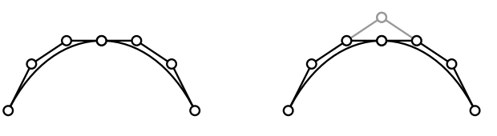
we only need one control point per segment, plus one more for start and one more for end
the grey points are B-spline control points. we can use them to recover the black points.
why not use interpolatory curves?
ans1: high degree interpolatory has oscillation
ans2: do not confuse modeling with representation
sketch with mouse and least squares fit a B-spline
direct manipulation avoids exposing control points
B-splines
defn. for a given sequence of knots t1,t2,...tn, there is a unique, up to a scaling factor, spline Bi,n satisfying
Bi,n(x)={0non-zero if x<ti or x≥ti+n otherwise
if we additionally constrain that ∑i=0nBi,n(x)=1, then the scaling factor is fixed, and the resulting functions Bi,n(x) are called B-splines. their linear combination is B-spline curve.
in general, B-splines (basis splines) provide a method for approximating a set of n points with a curve made up of polynomials of degree d that gives Cd–1 continuity.
to evaluate B-splines, we would convert to bezier and evaluate the bezier curves
there is also Cox–de Boor algorithm similar to de Casteljau's
nonuniformity:
in general, B-splines can go over arbitrary intervals [t0,t1],[t1,t2],... where t0<t1<t2<...
ti's are called knots
B-splines have different basis functions
see [Ch 15.6.2 "Fundamentals of Computer Graphics" by S. Marschner and P. Shirley] for B-splines.
tensor product patches
defn. a control polygon is polygonal mesh with vertices Pi,j.
defn.patching blending functions are products of curve basis functions
P(s,t)=i=0∑nj=0∑nPi,jBi,jn(s,t)
where Bi,jn(s,t)=Bin(s)Bjn(t).
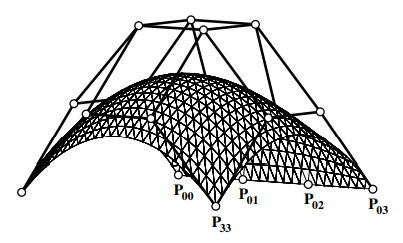
for the bezier case, just like bezier curve has 4 control points, a bezier patch has 16 control points. traversing along any parametric direction we traverse a bezier curve.
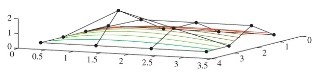
properties:
sum to one: ∑i=0n∑j=0nBin(s)Bjn(t)=1.
nonnegativity: Bin(s)Bjn(t)≥0,0≤s,t≤1.
convex hull: surface patch is in the convex hull of control points.
affinely invariant: transform of patch = transform of control points.
subdivision, recursion and evaluation: as for curves in each variable separately and independently
tangent plane is not produced by de Casteljau => normals must be computed from partial derivatives
partial derivatives: each is a tangent vector in a parametric direction:
the (unnormalized) surface normal is ±[∂s∂P(s,t)×∂t∂P(s,t)], where sign dictates what is outward pointing normal
in particular, the cross-boundary tangent for s=0 is
ni=0∑n(Pi,1−Pi,0)Bin(t)
similarly for other boundaries
smoothly joined patches: add constraint Pi,n−Pi,n−1=β(Qi,1−Qi,0)∃β>0 (and similarly for other boundaries)
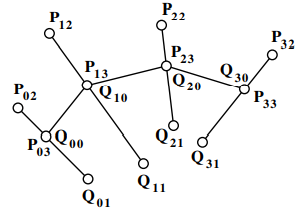
generally the quilt has the form of a grid: squares meeting four at a corner.
if we want to make a shape where adjacent patches meet three at a corner or five at a corner, the conditions for continuity are much messier and the resultant shape is not as controllable
how to render:
can render by stepping: s=0,δ,2δ,...,1;t=0,γ,2γ,...,1, then joining up sodes and diagonals to make triangular mesh
or by subdividing and rendering the control polygon
tensor product B-splines:
could use B-splines instead of bezier => automatic continuity between patches
tensor product patch works well for rectilinear patches, but problems arise when filling non-rectangular holes.
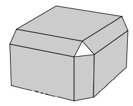
Week 13. Mar 29
animation
animation: rapid display of slightly different images creates illusion of motion.
conventional approach: kyframed animation (keyframes and inbetween frames)
computer assisted: human key frames, computer inbetweening
supporting techniques: squish-box deformations and skeletons, motion capture, kinetic and inverse kinetics
other approaches: physically-based dynamics, constriant-based animation, procedural animation, behavioral animation
(traditional) 2D cel animation:
labor intensive
start with story board
master artist draws keyframes to define action
sweat-shop artists draw in between frames
rules:
stretch and squash (anti-aliasing): defining the rigidity and mass of an object by distorting its shape during an action.
timing: spacing actions to define the weight and size of objects and the personality of characters
anticipation: the preparation for an action.
staging: presentating an idea so that it is unmistakably clear
follow through and overlapping action: termination of an action and establishing its relationship to the next action
straight ahead action and pose-to-pose action: the two contrasting approaches to the creation of movement.
slow in and out: spacing of the inbetween frames to achieve subtlety of timing and movement.
arcs: visual path of action for natural movement
exaggeration: accentuating the essence of an idea via the design and the action.
secondary action: action of an object resulting from another action
appeal: creating a design or an action that the audience enjoys watching
fewer keyframes may be required for a given level of 'quality'
cons:
control points for splines may have to be computed based on interpolation constraints at control points
extra info may be required at keyframes, such as tangent vectors
splines are more expensive to evaluate (non-issue)
splines are more difficult to implement (non-issue)
transformation matrix animation:
one way: interpolate a transformation matrix
keyframes are 'poses' of objects given by animator
functional animation applied independently to all entries of the matrix
it does not support animation of rigid bodies
eg. given two poses of an object that differ by a 180-degree rotation, under linear interpolation (of reflection), object will turn inside out, collapse to a plane in the middle of the interpolation
rigid body animation:
rigid body transformations only have 6 degrees of freedom while general affine transformations have 12
two obtain good interpolation, consider 3 DOFs from translation and 3 DOFs from rotation
motion path animation
when we translate a point along a path, we want
independent control of velocity along path
continuity control
splines can easily support continuity control, but velocity control is more difficult:
visually notice discontinuities in 2nd derivative => need C3 splines (degree 4)
equal increment in spline parameter does not correspond to equal increment of distance along spline
different segments of spline with same parametric length can have different physical lengths
if we parameterize spline directly with time parametric objects will move at non-uniform speed
arc length parameterization:
given spline path P(u)=[x(u),y(u),z(u)], compute arclength of spline as function of u: s=A(u)
find inverse: u=A−1(s)
substitute u=A−1(s) into P(u) to find motion path parameterized by arc length: P(s)=P(A−1(s))
u,s thus should be global parameters, extending across all segments of the original spline
the arclength is given by:
s=A(u)=∫0u(dvdx(v))2+(dvdy(v))2+(dvdz(v))2dv
issue: s=A(u) does not have analytic solution if motion path is cubic spline => A−1(s) has no analytic solution.
velocity control:
let s=f(t) specify distance along spline as function of t
function f(t), being just scalar value, can be supported with a functional animation technique (eg. another spline)
function f(t) may be specified as integral of yet another function v(t)=dtdf(t)
integral of one spline function can be found analytically, through computation of control points
motion path as function of time is P(A−1(f(t)))
issue in real-time animation:
exact arc-length parameterization is not feasible
alternative: compute points on the spline at equally-spaced parametric values, and use linear interpolation along chords
linear interpolation should consider distance between samples to maintain constant velocity
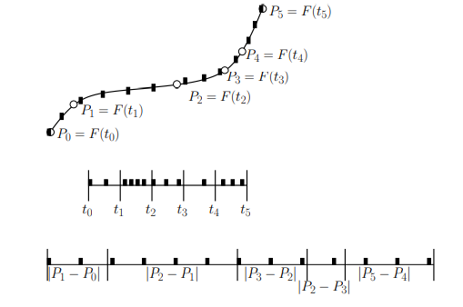
interpolating rotations
we interpolate angles rather than transformation matrices. in 3d, orientation requires 3 degrees of freedom, interpolation is nastier and harder to visualize.
there are two approaches: euler angle and quaternions.
Euler angles: x-roll, then y-roll, then z-roll
+ widely used in practice
+ easy to implement
+ inexpensive computationally
- parametric singularity (gimbal lock): a DOF can suddenly vanish
note qr is equivalent to −qr in terms of rotation
to rotate a point qP=(0,P), its rotation is qP′=qrqPqr−1
for unit quaternions, its inverse is its conjugate
interpolating unit quaternions:
spherical interpolation (slerp) of quaternions gives better results than interpolation of euler angles
first find angle between quaternions: ω=cos−1(q1q2)
given parameter u∈[0,1] the slerp is
q(u)=q1sinωsin((1−u)ω)+q2sinωsinuω
animating camera motion
their requirements are different from object motion:
specification of camera motion has a long cinematic tradition that should be respected
camera should always be level unless otherwise specified
image of objects of interest should be stable on the film plane
camera cinematic terminology:
dolly: move forward along the line of sight of the camera (towards object of interest)
track: move horizontally, perpendicular to the line of sight of the camera. more generally, move in a horizontal plane
crane: raise camera vertically
tilt (bank): rotate about horizontal axis perpendicular to the line of sight of the camera
pan (yaw): rotate about vertical axis of camera (after tilt)
zoom (in/out): change angular FOV of the camera
focus: change the focal depth, ie distance at which objects are in focus
depth of field: changing the aperture size has effect of changing depth of field, ie the range of depths over which objects can be considered to be in focus
camera cinematics:
animated zoom changes perspective, which can be annoying => use dolly to enlarge image of object
camera should almost never be rotated about its view direction (unless you want seasick audience)
changing focal depth can be used to track objects of interest but requires sophisticated renderer
use smooth spline animation for camera animation => quick camera should normally be replaced by cuts unless special effect is desired
animation of spotlight sources is similar to animation of a camera => support of a 'light's-eye-view' is often uesful
camera animation specs:
with a camera, usually more interested in what it is looking at than its exact orientation
camera animation may be specified by:
motion path for camera itself
motion path for a lookAtpoint (possibly derived from motion of object)
camera moved along the motion path and the orientation of camera determined by the lookAt point
ideally, 'focus would be pulled' to match distance to object
tilt might be constraint to lie within a certain range
kinemetics
kinemetics: study of motion independent of the forces that cause the motion, including position, velocity and acceleration
forward kinematics: determination of x, v, a of all the links in an articulated model given the x, v, a of the root of the model and all transformation between links
it is necessity for seletal keyframed animation
easy to implement
inverse kinematics: derivation of motion of intermediate links in an articulated body given the motion of some key links
often nonlinear, underdetermined or overdetermined, possibly ill-conditioned
complexity of determining solution is proportional to the number of free links
one free joint between two fixed ones can be solved fairly easily, for example, with only one spare DOF
extra constraints may be needed to obtain unique and stable solution
eg: requiring a joint to point downwards as a gross approximation to gravity
joint motion constraints (hinge vs. revolute vs. ball) are also useful.
additional optimization objectives:
resulting optimization problem solved iteratively as animation proceeds
minimize kinetic energy of structure
minimize total elevation of structure
minimize maximum (average) torque
...
in most situations, the animator just wants them to move naturally 'on their own,' and one is much more interested in specifying the behavior of the endpoint of a joint chain
Week 14. Apr 5
realism
["Three Varieties of Realism in Computer Graphics" by J.A. Ferwerda.]
variables of realism:
physical realism: image provides same visual stimulation as the scene
must have accurate descriptions of shapes, material and illumination, and light properties
in most cases images are not realizable on existing displays
very expensive for little purpose
photo-realism: image provides same visual response as the scene
indistinguishable from a photograph => image has to be photo-metrically realistic
need to take observer's visual system to account. but shortcut can be taken based on this
can undermines image's value as a predictive simulation and reduce quality
not clear whether photo-realism is necessary in wide range of graphic applications
classifies most renderings as failures ignoring their obvious utility (consider user manual)
function realism: image provides same visual information as the scene
defined in terms of fidelity of the info that image provides
admits wide range of rendering styles from physical realism to photo-realism, to non-photorealistic rendering
eg: flight simulators
determining functional realism:
explore relationships between
accuracy (correctness of image with respect to some physically measurable property of scene such as radiance) and
fidelity (does image allow observe to perceive important info?)
a number of studies explored relationships between characteristics of rendered images and the abilities of observers to perform visual tasks (by factorial experiments)
can have probabilistic inference instead, allowing fidelity provided by image to be quantified
p(S∣I)=p(I)p(I∣S)p(S)
p(S∣I): the reliability of info provided about some scene property given an image
p(I∣S): likelihood of obtaining that image
p(S): how often scene property occurs
p(I): scaling constant
similay to visible difference detector (VDP), can propose a functional difference detector